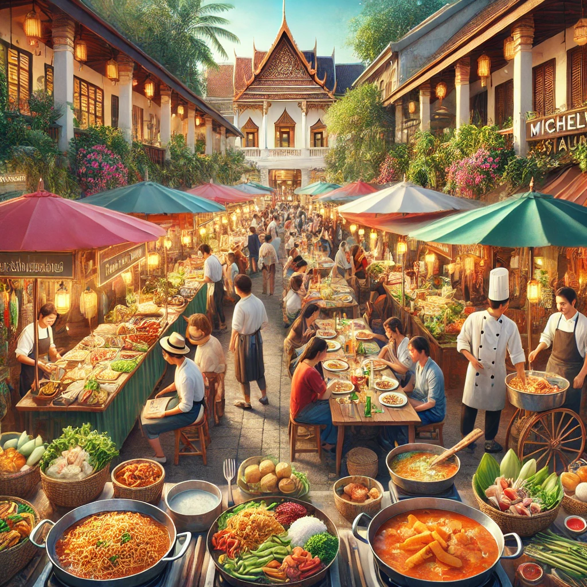

Thailand, known as the "Land of Smiles," has established itself as one of the most popular travel destinations in the world. With its breathtaking landscapes, rich cultural heritage, and warm hospitality, Thailand attracts millions of visitors each year. The country’s success in tourism is not accidental; it is the result of well-planned strategies, government initiatives, and continuous development. Here’s how Thailand became a global tourism powerhouse.
1. Diverse Attractions for Every Type of Traveler
Thailand offers a wide range of attractions that cater to different types of tourists:
-
Beaches and Islands: Iconic destinations like Phuket, Krabi, Koh Samui, and
Phi Phi Islands offer stunning beaches and crystal-clear waters.
-
Cultural and Historical Sites: Cities like Ayutthaya, Sukhothai, and Chiang Mai
boast ancient temples, ruins, and UNESCO heritage sites.
-
Urban Excitement: Bangkok, the vibrant capital, offers bustling markets,
luxurious shopping malls, nightlife, and world-class street food.
-
Adventure and Nature: Northern Thailand’s mountains provide opportunities
for trekking, elephant sanctuaries, and outdoor adventures.
2. Strong Government Support and Tourism Campaigns
The Thai government has played a significant role in promoting tourism through various initiatives:
-
"Amazing Thailand" Campaign: Launched by the Tourism Authority of Thailand
(TAT), this long-running campaign effectively promotes Thai culture, hospitality,
and natural beauty.
-
Visa Facilitation: Thailand has implemented visa exemptions, visa-on-arrival
policies, and electronic visas to make travel easier.
-
Investment in Infrastructure: The government has invested heavily
in airports, roads, and public transportation to improve accessibility
for tourists.
-
Adventure and Nature: Northern Thailand’s mountains provide opportunities
for trekking, elephant sanctuaries, and outdoor adventures.
3. Affordability and Value for Money
Thailand is known for offering an excellent balance between quality and affordability:
-
Budget travelers can enjoy affordable accommodation, street food, and transportation.
-
Luxury travelers can experience world-class resorts, spas, and fine dining at
competitive prices compared to Western countries.
-
Shopping options range from budget-friendly markets to high-end designer malls.
4. Hospitality and Unique Thai Culture
The warm and welcoming nature of Thai people has contributed to the country’s strong reputation as a tourist-friendly destination:
-
Thai hospitality is legendary, with a strong service culture in hotels, restaurants, and tourist
attractions.
-
Unique cultural experiences such as the Songkran Festival (Thai New Year)
and Loy Krathong (Festival of Lights) attract visitors looking for authentic traditions.
5. Digital Marketing and Social Media Influence
Thailand has embraced modern digital marketing strategies to attract international tourists:
- Social media influencers and travel vloggers frequently showcase Thailand’s beauty, inspiring travelers to visit.
- The government collaborates with digital platforms to offer virtual tours, travel guides, and promotional discounts.
- Hashtags like #AmazingThailand and #ThailandTravel help create global visibility.
6. Sustainable and Eco-Tourism Initiatives
Recognizing the need for responsible tourism, Thailand has made efforts toward sustainability:
- Eco-friendly resorts and community-based tourism encourage travelers to support local economies and reduce their environmental footprint.
- Wildlife conservation efforts protect elephants, marine life, and forests, promoting ethical tourism practices.
- Plastic reduction campaigns in major tourist areas help protect Thailand’s natural beauty.
7. Culinary Tourism: A Food Lover’s Paradise
Thai cuisine is one of the biggest attractions for visitors:
- Street food markets in Bangkok, Chiang Mai, and Phuket offer affordable and delicious local dishes like Pad Thai, Tom Yum, and Mango Sticky Rice.
- Michelin-starred restaurants and food tours cater to culinary enthusiasts looking for an upscale dining experience.
- Thai cooking classes allow visitors to learn and take home the flavors of Thailand.

Conclusion
Thailand’s tourism success is a result of its rich cultural heritage, strategic government support, modern marketing, and strong hospitality sector. By continuously adapting to travelers’ preferences and focusing on sustainability, Thailand remains one of the most desirable travel destinations in the world.
What do you love most about Thailand as a travel destination? Share your thoughts in the comments below!
- Thailand Diaries